7. Casestudy: beheer van een artikelbestand op het web
De codes voor deze casestudy zijn beschikbaar |ICI|.
Doelstellingen:
- een klasse schrijven voor het beheer van een artikeldatabase
- een webapplicatie schrijven die op deze klasse is gebaseerd
- stylesheets introduceren
- een eerste aanzet geven tot een ontwikkelingsmethodologie voor eenvoudige webapplicaties
- JavaScript in de clientbrowser introduceren
Bronvermelding: De kern van deze casestudy is ontleend aan het boek "Les cahiers du programmeur - PHP/MySQL" van Jean-Philippe Leboeuf, uitgegeven door Eyrolles.
7.1. Inleiding
Een winkelier wil de artikelen beheren die hij in zijn winkel verkoopt. Hij beschikt thuis al over een ACCESS-applicatie die dit werk doet, maar hij voelt zich aangetrokken tot het avontuur van het web. Hij heeft een account bij een internetprovider die zijn klanten toestaat PHP-scripts in hun persoonlijke mappen te installeren. Hierdoor kunnen ze dynamische websites maken. Bovendien beschikken deze klanten over een MySQL-account waarmee ze tabellen kunnen aanmaken die gegevens kunnen leveren aan hun PHP-scripts. De winkelier heeft dus een MySQL-account met de login ‘adarticles’ en het wachtwoord ‘mdparticles’. Hij beschikt over een database ‘dbarticles’ waarover hij alle rechten heeft. Onze winkelier heeft dus voldoende middelen om zijn artikelbeheer op het web te zetten. Met de hulp van u, die over vaardigheden op het gebied van webontwikkeling beschikt, stort hij zich in dit avontuur.
7.2. De database
Onze winkelier maakt het volgende ontwerp van de webinterface die hij graag zou willen:

Er zouden twee soorten gebruikers zijn:
- beheerders die alles zouden kunnen doen met de artikeltabel (toevoegen, wijzigen, verwijderen, raadplegen, ...). Zij zouden alle menu-items hierboven kunnen gebruiken. Ze zouden met name elke query SQL kunnen uitvoeren via de optie [Requête SQL].
- gewone gebruikers (geen beheerders) met beperkte rechten: het recht om toe te voegen, te wijzigen, te verwijderen en te raadplegen. Zij kunnen slechts over bepaalde van deze rechten beschikken, bijvoorbeeld alleen het recht om te raadplegen.
Omdat er verschillende soorten gebruikers van de database zijn die niet dezelfde rechten hebben, is authenticatie noodzakelijk. Daarom begint de startpagina met deze stap. Om te weten wie wie is en wie wat mag doen, worden twee tabellen gebruikt: USERS en DROITS. De tabel USERS zou de volgende structuur hebben:
 |
|
De inhoud van de tabel zou er als volgt uit kunnen zien:

De tabel DROITS specificeert de rechten van de gebruikers die geen beheerder zijn en die in de tabel USERS voorkomen. De structuur ervan is als volgt:
 |
|
De inhoud van de tabel zou als volgt kunnen zijn:

Opmerkingen:
- Een gebruiker U die voorkomt in de tabel USERS en niet voorkomt in de tabel DROITS, heeft geen rechten.
- In ons voorbeeld hebben de gebruikers slechts toegang tot één tabel, namelijk de tabel ARTICLES. Maar onze vooruitziende handelaar heeft niettemin het veld 'table' toegevoegd aan de structuur van de tabel DROITS, om zichzelf de mogelijkheid te geven om later nieuwe tabellen aan zijn applicatie toe te voegen.
- Waarom zouden we rechten in onze eigen tabellen beheren, terwijl we ervan uitgaan dat we een database MySQL zullen gebruiken die zelf (en beter dan wij) in staat is om deze rechten in haar eigen tabellen te beheren? Simpelweg omdat onze handelaar geen beheerdersrechten heeft voor de database MySQL, waarmee hij gebruikers zou kunnen aanmaken en hen rechten zou kunnen toekennen. Laten we immers niet vergeten dat de database MySQL bij een hostingprovider wordt gehost en dat de webwinkelhouder slechts een gewone gebruiker daarvan is zonder enige beheerdersrechten (gelukkig maar). Hij beschikt echter wel over alle rechten op een database met de naam dbarticles, waartoe hij momenteel toegang heeft met de gebruikersnaam admarticles en het wachtwoord mdparticles. In deze database bevinden zich alle tabellen van de applicatie.
De tabel ARTICLES bevat informatie over de artikelen die door de handelaar worden verkocht. De structuur ervan is als volgt:
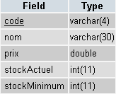 |
|
De inhoud ervan, die in eerste instantie als test wordt gebruikt, zou als volgt kunnen zijn:

7.3. De beperkingen van het project
De handelaar migreert hier een lokale applicatie ACCESS naar een webapplicatie. Hij weet niet wat er van deze applicatie zal worden en hoe deze zich zal ontwikkelen. Hij wil echter dat de nieuwe applicatie gebruiksvriendelijk en schaalbaar is. Om deze reden heeft zijn IT-adviseur bij het ontwerpen van de tabellen bedacht dat er:
- verschillende gebruikers met verschillende rechten: zo kan de ondernemer bepaalde taken aan anderen delegeren zonder hen beheerdersrechten te geven
- in de toekomst andere tabellen dan de tabel ARTICLES
Dezelfde adviseur doet nog andere voorstellen:
- hij weet dat bij softwareontwikkeling de presentatielaag en de verwerkingslaag duidelijk van elkaar gescheiden moeten worden. De architectuur van een webapplicatie ziet er vaak als volgt uit:
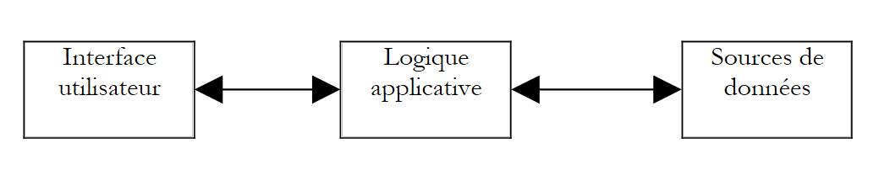 |
De gebruikersinterface is hier een webbrowser, maar het zou ook een zelfstandige applicatie kunnen zijn die via het netwerk verzoeken HTTP naar de webservice stuurt en de resultaten die deze terugstuurt, opmaakt. De applicatielogica bestaat uit scripts die de verzoeken van de gebruiker verwerken, in dit geval de scripts PHP. De gegevensbron is vaak een database, maar het kan ook een directory LDAP of een externe webservice zijn. Het is in het belang van de ontwikkelaar om een grote onafhankelijkheid tussen deze drie entiteiten te behouden, zodat als er één verandert, de andere twee niet of nauwelijks hoeven te veranderen. De IT-adviseur van de handelaar doet daarom de volgende voorstellen:
- We zullen de bedrijfslogica van de applicatie in een klasse PHP onderbrengen. Het bovenstaande blok [Logique applicative] zal dan uit de volgende elementen bestaan:
 |
In het blok [Logique Applicative] kunnen we onderscheid maken tussen
- het blok [IE=Interface d'Entrée], dat de toegangspoort tot de applicatie vormt. Dit blok is voor alle soorten klanten hetzelfde.
- het blok [Classes métier], dat de klassen bevat die nodig zijn voor de logica van de applicatie. Deze zijn onafhankelijk van de klant.
- het blok met de generatoren voor de responspagina’s [IS1 IS2 ... IS=Interface de Sortie]. Elke generator is verantwoordelijk voor het opmaken van de resultaten die door de applicatielogica worden geleverd voor een bepaald type klant: code HTML voor een browser of een telefoon (WAP), code XML voor een stand-alone applicatie, ...
Dit model zorgt voor een goede onafhankelijkheid ten opzichte van de clients. Of de client nu verandert of men de manier waarop de resultaten worden gepresenteerd wil aanpassen, het zijn de uitvoergeneratoren [IS] die moeten worden aangemaakt of aangepast.
- In een webapplicatie kan de onafhankelijkheid tussen de presentatielaag en de verwerkingslaag worden verbeterd door het gebruik van stylesheets. Deze bepalen de weergave van een webpagina in een browser. Om deze weergave te wijzigen, volstaat het om de bijbehorende stylesheet aan te passen. De verwerkingslogica hoeft niet te worden aangepast. We zullen hier dus een stylesheet gebruiken.
- In het bovenstaande diagram vormt de businessklasse de interface met de gegevensbron. In dit geval is deze bron een MySQL-database. Om een overstap naar een andere database mogelijk te maken, gebruiken we de bibliotheek PEAR, die klassen biedt voor toegang tot databases, onafhankelijk van het daadwerkelijke type daarvan. Als onze handelaar dus zo rijk wordt dat hij een Microsoft-webserver IIS in zijn bedrijf kan installeren, kan hij de database MySQL vervangen door SQL Server zonder (of met slechts minimale) aanpassingen aan de businessklasse.
7.4. De artikelklasse
De artikelklasse zou als volgt kunnen worden gedefinieerd:
<?php
// artikelklasse die werkt op basis van een artikelbestand bestaande uit de volgende tabellen
// artikelen: (code, naam, prijs, stockActuel, stockMinimum)
// gebruikers: (login, wachtwoord, admin)
// rechten: (gebruikersnaam, tabel, toevoegen, wijzigen, verwijderen, bekijken)
// dit is de gebruiker van de klas die de gebruikersnaam en het wachtwoord moet opgeven om alle bewerkingen in de database uit te voeren
// hij heeft dus al alle rechten op de database. Dit betekent dat er hier geen
// hier geen speciale veiligheidsmaatregelen hoeven te worden genomen
// bibliotheken
require_once 'DB.php';
class articles{
// attributen
var $sDSN; // de verbindingsstring
var $sDatabase; // de naam van de database
var $oDB; // verbinding met de database
var $aErreurs; // foutenlijst
var $oRésultats; // resultaat van een SELECT-query
var $connecté; // booleaanse waarde die aangeeft of er al dan niet verbinding is met de database
var $sQuery; // de laatst uitgevoerde query
var $sUser; // identiteit van de gebruiker van de verbinding
var $bAdmin; // is waar als de gebruiker beheerder is
var $dDroits; // de lijst met zijn rechten: table ->> array(bekijken, toevoegen, verwijderen, wijzigen)
// constructor
function articles($dDSN,$sUser,$sMdp){
// $dDSN: woordenboek waarin de te maken koppeling wordt gedefinieerd
// $dDSN['sgbd']: het type van de SGBD waarmee verbinding moet worden gemaakt
// $dDSN['host']: de naam van de hostmachine waarop het zich bevindt
// $dDSN['database']: de naam van de database waarmee verbinding moet worden gemaakt
// $dDSN['admin']: de gebruikersnaam van de eigenaar van de database waarmee verbinding moet worden gemaakt
// $dDSN['mdpadmin']: zijn wachtwoord
// $sUser: de gebruikersnaam van de gebruiker die de artikeldatabase wil gebruiken
// $sMdp: zijn wachtwoord
// maakt in $oDB een verbinding met de database die is gedefinieerd door $dDSN onder de identiteit van $dDSN['admin']
// als de verbinding slaagt en de gebruiker $sUser is geauthenticeerd
// laadt de rechten in $bAdmin en $dDroits de rechten van de gebruiker $sUser
// plaatst de verbindingsstring voor de database in $sDSN
// stelt in $sDataBase de naam in van de database waarmee verbinding wordt gemaakt
// zet $connecté op waar
// als de verbinding mislukt of als de gebruiker $sUser niet correct is geïdentificeerd
// voegt de juiste foutmeldingen toe aan de lijst $aErreurs
// sluit de verbinding indien nodig
// zet $connecté op ‘vals’
...
}//constructor
// ------------------------------------------------------------------
function connect(){
// (opnieuw) verbinding maken met de database
...
}//verbinding maken
// ------------------------------------------------------------------
function disconnect(){
// de verbinding met de database wordt verbroken $sDSN
...
}//verbinding verbreken
// -------------------------------------------------------------------
function execute($sQuery,$bAdmin){
// $sQuery: uit te voeren verzoek
// $bAdmin: waar als uitvoering als beheerder wordt gevraagd
...
}//uitvoeren
// --------------------------------------------------------------------------
function addArticle($dArticle){
// voegt een artikel toe $dArticle (code, naam, prijs, stockActuel, stockMinimum) toe aan de artikeltabel
...
}//toevoegen
// ----------------------------------------------------------------------
function modifyArticle($dArticle){
// wijzigt een artikel $dArticle (code, naam, prijs, stockActuel, stockMinimum) in de artikeltabel
...
}//update
// ----------------------------------------------------------------------
function deleteArticle($sCode){
// verwijdert een artikel uit de artikeltabel
// waarvan de code $sCode is
...
}//verwijderen
// ----------------------------------------------------------------------
function vérifierArticle(&$dArticle){
// controleert de geldigheid van een artikel $dArticle (code, naam, prijs, stockActuel, stockMinimum)
...
}//controleren
// --------------------------------------------------------------------------
function selectArticles($dQuery){
// voert een SELECT-query uit op de artikeltabel
// deze bestaat uit drie onderdelen
// lijst met kolommen in $dQuery['colonnes']
// filtering in $dQuery['where']
// weergavevolgorde in $dQuery['orderby']
...
}//selectArticles
// --------------------------------
function existeArticle($sCode){
// levert TRUE op als het artikel met code $sCode in de artikeltabel voorkomt
...
}//existeArticle
// --------------------------------------
function existeUser($sUser,$sMdp){
// controleert of de gebruiker $sUser met het wachtwoord $sMdp bestaat
// retourneert (int $iErreur, string $sAdmin, hashtable $dDroits)
// $iErreur = -1 bij elke fout bij het gebruik van de database – de lijst $aErreurs wordt dan ingevuld
// $iErreur = 1 als de gebruiker niet wordt gevonden (niet aanwezig of onjuist wachtwoord)
// $iErreur = 2 als de gebruiker bestaat maar geen rechten heeft in de rechtenlijst
// $iErreur = 3 als de gebruiker bestaat en beheerder is
// $iErreur = 0 als de gebruiker bestaat en geen beheerder is
// $sAdmin="y" als de gebruiker bestaat en beheerder is ($iErreur==3), anders is het gelijk aan de lege tekenreeks
// $dDroits is het rechtenwoordenboek van de gebruiker als deze geen beheerder is ($iErreur==0)
// anders is het een lege tabel
// de sleutels van het woordenboek zijn de tabellen waarop de gebruiker rechten heeft
// de waarde die aan deze tabel is gekoppeld, is op zijn beurt een woordenboek waarvan de sleutels de rechten zijn
// (bekijken, toevoegen, wijzigen, verwijderen) en de waarden de tekenreeksen 'y' (ja) of 'n' (nee), al naar gelang het geval
...
}//existeUser
// --------------------------------------
function getCodes(){
// levert de tabel met codes op
....
}//getCodes
}//classificeert
?>
Opmerkingen
- De klasse ‘articles’ maakt gebruik van de bibliotheek PEAR::DB voor haar toegang tot de database, vandaar het commando
Deze opname veronderstelt dat het script DB.php zich in een van de mappen bevindt die zijn opgegeven in de optie include_path van het configuratiebestand van PHP.
- De applicatie moet weten met welke database verbinding wordt gemaakt en onder welke identiteit. Deze informatie wordt verstrekt in het woordenboek $dDSN. Ter herinnering: de uitgangspunt was dat de database dbarticles heette en toebehoorde aan een gebruiker met de naam admarticles en het wachtwoord mdparticles. Laten we ook niet vergeten dat deze applicatie meerdere gebruikers met verschillende rechten toestaat. Hier is sprake van een onduidelijkheid die moet worden opgehelderd. De verbinding wordt inderdaad geopend onder de identiteit van admarticles en uiteindelijkzullen alle bewerkingen op de database dbarticles onder deze identiteit worden uitgevoerd, aangezien dit de enige naam is die bekend is bij SGBD MySQL, die over voldoende rechten beschikt om de database dbarticles te beheren. Om het bestaan van verschillende gebruikers te „simuleren”, laten we de gebruiker admarticles werken met de rechten van de gebruiker wiens login ($sUser) en wachtwoord ($sMdp) als parameters aan de constructor zijn doorgegeven. Voordat er dus een bewerking op de artikeldatabase wordt uitgevoerd, wordt gecontroleerd of de gebruiker ($sUser, $sMdp) daadwerkelijk de rechten heeft om deze uit te voeren. Zo ja, dan voert gebruiker admarticles de bewerking voor hem uit.
- De gebruikersnaam en het wachtwoord van de beheerder van de artikeldatabase moeten aan de constructor worden doorgegeven. Dit is een verstandige voorzorgsmaatregel. Als deze twee gegevens ‘hard’ in de code van de klasse zouden worden vastgelegd, zou elke gebruiker van de klasse zich gemakkelijk kunnen voordoen als beheerder van de artikeldatabase. Een klasse PHP is namelijk niet beveiligd. Ook het attribuut $bAdmin van de klasse, dat aangeeft of de gebruiker ($sUser, $sMdp) voor wie men werkt al dan niet beheerder is, zou heel goed rechtstreeks van buitenaf kunnen worden ingesteld, zoals in het volgende voorbeeld:
$oArticles=new articles($dDSN,$sUser,$sMdp)
// hier is $sUser herkend als een gebruiker zonder beheerdersrechten voor de database
$oArticle->bAdmin=TRUE;
// nu is $sUser beheerder geworden
PHP is niet JAVA of C# en een klasse PHP is slechts een gegevensstructuur die iets geavanceerder is dan een woordenboek, maar die niet de beveiliging biedt van een echte klasse waarin het attribuut bAdmin als privé of beschermd zou zijn gedeclareerd, waardoor het onmogelijk zou zijn om het van buitenaf te wijzigen. Omdat de gebruiker van de klasse de gebruikersnaam en het wachtwoord van de beheerder van de artikeldatabase moet kennen, kan alleen deze laatste de klasse gebruiken. De voorgaande bewerking heeft voor hem dus geen enkel nut meer. De klasse is er uitsluitend om hem ontwikkelingsvoordelen te bieden. Een belangrijk gevolg hiervan is dat er geen veiligheidsmaatregelen hoeven te worden genomen. Nogmaals: degene die de klasse articles gebruikt, is noodzakelijkerwijs beheerder van de artikeldatabase.
- De klasse verwerkt fouten bij het verbinden met de database of andere fouten op een unieke manier door het attribuut $aErreurs te vullen met de foutmelding(en). Na elke bewerking moet de gebruiker van de klasse deze lijst dus controleren.
- De methoden addArticle, updateArticle, deleteArticle, selectArticles en execute vloeien rechtstreeks voort uit het eerder gepresenteerde ontwerp van de webinterface. Ze komen namelijk overeen met de opties in het aangeboden menu. De methoden addArticle en modifyArticle maken gebruik van de methode vérifierArticle om te controleren of het artikel dat zal worden toegevoegd of gewijzigd, correcte gegevens bevat. In dezelfde geest maakt de methode existeArticle het mogelijk om te controleren of er geen artikel wordt toegevoegd dat al bestaat. Deze methode zou overbodig zijn als er gebruik wordt gemaakt van een artikeltabel waarin de code de primaire sleutel is. In dat geval zal de methode SGBD zelf aangeven dat het toevoegen is mislukt vanwege een dubbel artikel. Dit zal waarschijnlijk worden aangegeven met een onduidelijke foutmelding in het Engels.
- Een artikel dat moet worden gewijzigd of verwijderd, wordt aangeduid met zijn unieke code. Met de methode getCodes kun je al deze codes ophalen.
- De methode `disconnect` verbreekt de verbinding met de database, die tijdens het aanmaken van het object tot stand is gebracht. Het nut van de methode `connect`, die een nieuwe verbinding met de database tot stand brengt, is hier niet direct duidelijk. Hiermee kan deze verbinding naar believen met hetzelfde object worden geopend en gesloten. Het nut komt pas naar voren in combinatie met de webapplicatie. Deze zal een `articles`-object aanmaken dat in een sessie wordt opgeslagen. Hoewel de applicatie in staat is om de meeste attributen van het object te behouden tijdens opeenvolgende client-server-uitwisselingen, kan zij het attribuut dat de open verbinding vertegenwoordigt niet behouden. Deze verbinding moet daarom bij elke nieuwe client-server-uitwisseling opnieuw worden geopend. We vragen om een persistente verbinding, zodat de geopende verbinding in een verbindingspool wordt opgeslagen en permanent open blijft. Wanneer het script vervolgens om een nieuwe verbinding vraagt, wordt deze uit de verbindingspool opgehaald. We komen dus tot hetzelfde resultaat als wanneer de sessie de geopende verbinding had kunnen onthouden.
- Met de methode existeUser kan de fabrikant nagaan of de gebruiker $sUser, geïdentificeerd met het wachtwoord $sMdp, daadwerkelijk bestaat. Zo ja, dan kan met deze methode worden vastgesteld of hij beheerder is of niet (zoals aangegeven in de tabel USERS) en wordt deze informatie opgeslagen in het attribuut $bAdmin. Als hij geen beheerder is, haalt de methode zijn rechten op uit de tabel DROITS en plaatst deze in het attribuut $dDroits, dat een dubbel geïndexeerd woordenboek is: $dDroits[$table][$droit] is gelijk aan 'y' als de gebruiker $sUser het recht $droit heeft op de tabel $table en 'n' in alle andere gevallen.
Schrijf de klasse articles. Toegang tot de database gebeurt met behulp van de bibliotheek </mark>[<u><span style="color: #0563c1">PEAR::DB</span></u>](https://pear.php.net/package/DB/)<mark style="background-color: #ffe994">, waardoor het exacte type van de database niet van belang is.
7.5. De structuur van de applicatie WEB
Nu we de 'zakelijke' klasse voor het beheer van de artikelendatabase hebben, kunnen we deze in verschillende omgevingen gebruiken. Hier wordt voorgesteld om deze in een webapplicatie te gebruiken. Laten we deze aan de hand van de volgende pagina's eens bekijken:
7.5.1. De standaardpagina van de applicatie
Laten we teruggaan naar de eerder gepresenteerde startpagina:
1234
Alle pagina’s van de applicatie zullen de bovenstaande structuur hebben, namelijk die van een tabel met twee rijen en drie kolommen, bestaande uit vier velden:
- zone 1 vormt de eerste rij van de tabel. Deze is gereserveerd voor de titel, eventueel vergezeld van een afbeelding. De drie kolommen van deze rij zijn hier samengevoegd.
- de tweede rij heeft drie zones, één zone per kolom:
- zone 2 bevat de menuopties. Deze zone bevat op haar beurt een tabel met één kolom en meerdere rijen. De menuopties worden in de rijen van de tabel geplaatst.
- zone 3 is leeg en dient alleen om de zones 2 en 4 van elkaar te scheiden. Er waren ook andere manieren geweest om deze scheiding te realiseren.
- zone 4 bevat het dynamische gedeelte van de pagina. Dit is het gedeelte dat bij elke actie verandert, terwijl de overige delen identiek blijven.
Het script PHP dat dit paginasjabloon genereert, krijgt de naam main.php en zou er als volgt uit kunnen zien:
<html>
<head>
<title>Gestion d'articles</title>
<link type="text/css" href="<?php echo $dConfig['urlPageStyle'] ?>" rel="stylesheet" />
</head>
<body background="<?php echo $dConfig['urlBackGround'] ?>">
<table>
<tr height="60">
<td colspan="3" align="left" valign="top" >
<h1><?php echo $main["title"] ?></h1>
</td>
</tr>
<tr>
<td>
<table>
<tr>
<td class="menutitle" >
<a href="<?php echo $main["liens"]["login"] ?>" ?>Authentification</a>
</td>
</tr>
<tr>
<td><br /></td>
</tr>
<tr>
<td class="menutitle" >
Utilisation
</td>
</tr>
<tr height="10"></tr>
<tr>
<td class="menublock" >
<img alt="-" src="../images/radio.gif" />
<a href="<?php echo $main["liens"]["addArticle"] ?>" ?>
Ajouter un article
</a>
</td>
</tr>
<tr>
<td class="menublock" >
<img alt="-" src="../images/radio.gif" />
<a href="<?php echo $main["liens"]["updateArticle"] ?>">
Modifier un article
</a>
</td>
</tr>
<td class="menublock" >
<img alt="-" src="../images/radio.gif" />
<a href="<?php echo $main["liens"]["deleteArticle"] ?>">
Supprimer un article
</a>
</td>
</tr>
<tr>
<td class="menublock" >
<img alt="-" src="../images/radio.gif" />
<a href="<?php echo $main["liens"]["selectArticle"] ?>">
Lister des articles
</a>
</td>
</tr>
<tr>
<td><br /></td>
</tr>
<tr>
<td class="menutitle" >
Administration
</td>
</tr>
<tr height="10"></tr>
<tr>
<td class="menublock" >
<img alt="-" src="../images/radio.gif" />
<a href="<?php echo $main["liens"]["sql"] ?>" >
Requête SQL
</a>
</td>
</tr>
</table>
</td>
<td>
<img alt="/" src="../images/pix.gif" width="10" height="1" />
</td>
<td>
<fieldset>
<legend><?php echo $main["légende"] ?></legend>
<?php
include $main["contenu"];
?>
</fieldset>
</td>
</tr>
</table>
</body>
</html>
De geconfigureerde velden van de pagina zijn in de bovenstaande lijst gemarkeerd. De standaardpagina is op verschillende manieren geconfigureerd:
- via een woordenboek $main met de volgende sleutels:
- title: titel die in zone 1 van de pagina moet worden geplaatst
- links: woordenboeken met de links die in de menukolom moeten worden gegenereerd. Deze links zijn gekoppeld aan de menuopties van zone 2
- inhoud: de URL van de pagina die in zone 4 moet worden weergegeven
- door een woordenboek $dConfig waarin informatie is verzameld uit een configuratiebestand van de applicatie met de naam config.php
- door middel van klassen die deel uitmaken van het stylesheet dat door de pagina wordt gebruikt:
De pagina maakt hier gebruik van de volgende stijlklassen:
- menutitle: voor een hoofdoptie in het menu
- menublock: voor een suboptie in het menu
Als je een van de parameters verandert, verandert het uiterlijk van de pagina. Als je dus $main['title'] verandert, verandert de titel van zone 1.
7.5.2. De standaardverwerking van een verzoek van een klant
De klant communiceert met de applicatie via de links in zone 2 van de standaardpagina. Deze links zijn van het volgende type:
duidt de huidige actie aan uit de volgende:
| |||||||||||
een actie kan in meerdere stappen worden uitgevoerd – geeft de huidige stap aan | |||||||||||
sessietoken wanneer de sessie is gestart – stelt de server in staat om informatie op te halen die tijdens eerdere uitwisselingen in de sessie is opgeslagen |
Ook het attribuut ‘action’ in formulieren heeft dezelfde vorm. Op de startpagina staat bijvoorbeeld een inlogformulier in zone 4. De tag HTML van dit formulier is als volgt gedefinieerd:
De verwerking van het verzoek van de client wordt uitgevoerd door het hoofdscript van de applicatie, genaamd apparticles.php. Dit script heeft als taak het antwoord aan de client samen te stellen. Het gaat daarbij altijd op dezelfde manier te werk:
- Aan de hand van de naam van de actie en de huidige fase zal hij het verzoek doorsturen naar een gespecialiseerde functie. Deze functie verwerkt het verzoek en genereert de juiste antwoordpagina. Voor elk verzoek van de klant kunnen er meerdere mogelijke antwoordpagina’s zijn: pagina1, pagina2, …, paginan. Deze pagina’s bevatten informatie die door de functie moet worden berekend. Het gaat dus om geparametriseerde pagina’s. Deze worden gegenereerd door de scripts page1.php, page2.php, …, pagen.php.
- Omwille van de uniformiteit worden de variabele delen van de pagina’s die in zone 4 van de standaardpagina moeten worden weergegeven, eveneens in het woordenboek $main geplaatst.
Stel dat de server in reactie op een verzoek de pagina pagex.php naar de client moet verzenden. Hij gaat dan als volgt te werk:
- hij plaatst in het woordenboek $main de waarden die nodig zijn voor de pagina pagex.php
- hij zal in $main['contenu'], dat verwijst naar de URL van de weer te geven pagina, in zone 4 van de sjabloonpagina plaatsen, de URL van pagex.php
- zal hij de weergave van de standaardpagina aanvragen met de instructie
De sjabloonpagina wordt dan weergegeven met in zone 4 de scriptcode pagex.php, die wordt geëvalueerd om de inhoud van zone 4 te genereren. We herinneren eraan dat dit een eenvoudige cel in een tabel is. De door pagex.php gegenereerde code HTML mag dus niet beginnen met de tags <HTML>, <HEAD>, <BODY>, ... Deze zijn al aan het begin van de sjabloonpagina gegenereerd. Hieronder ziet u bijvoorbeeld hoe het script login.php eruit zou kunnen zien dat zone 4 van de startpagina genereert:
<form name="frmLogin" method="post" action="<?php echo $main["post"] ?>">
<table>
<tr>
<td>login</td>
<td><input type="text" value="<?php echo $main["login"] ?>" name="txtLogin" class="text"></td>
</tr>
<tr>
<td>mot de passe</td>
<td><input type="password" value="" name="txtMdp" class="text"></td>
<td><input type="submit" value="Connexion" class="submit"></td>
</tr>
</table>
</form>
We zien dat de pagina:
- is teruggebracht tot een formulier
- en wordt zowel door het woordenboek $main als door het stylesheet geconfigureerd.
7.5.3. Het configuratiebestand
Het is altijd raadzaam om applicaties zo veel mogelijk te configureren om te voorkomen dat je in de code moet duiken, simpelweg omdat je bijvoorbeeld hebt besloten het pad van een script of een afbeelding te wijzigen. De hoofdapplicatie apparticles.php laadt daarom bij het opstarten een configuratiebestand config.php:
In dit bestand plaatsen we configuratierichtlijnen voor PHP en initialisaties van globale variabelen:
<?php
// PHP-configuratie
ini_set("register_globals","off");
ini_set("display_errors","off");
ini_set("expose_php","off");
ini_set("session.use_cookies","0"); // geen cookies
// basisconfiguratie artikelen
$dConfig["DSN"]=array(
"sgbd"=>"mysql",
"admin"=>"admarticles",
"mdpadmin"=>"mdparticles",
"host"=>"localhost",
"database"=>"dbarticles"
);
// URL's van de pagina's
$dConfig['urlBackGround']="../images/standard.jpg";
$dConfig["urlPageStyle"]="mystyle.css";
$dConfig["urlAppArticles"]="apparticles.php";
$dConfig["urlPageMain"]="main.php";
$dConfig["urlPageLogin"]="login.php";
$dConfig["urlPageErreurs"]="erreurs.php";
$dConfig["urlPageInfos"]="infos.php";
$dConfig["urlPageAddArticle"]="addarticle.php";
$dConfig["urlPageUpdateArticle1"]="updatearticle1.php";
$dConfig["urlPageUpdateArticle2"]="updatearticle2.php";
$dConfig["urlPageDeleteArticle1"]="deletearticle1.php";
$dConfig["urlPageDeleteArticle2"]="deletearticle2.php";
$dConfig["urlPageSelectArticle1"]="selectarticle1.php";
$dConfig["urlPageSelectArticle2"]="selectarticle2.php";
$dConfig["urlPageSQL1"]="sql1.php";
$dConfig["urlPageSQL2"]="sql2.php";
$dConfig["urlPageSQL3"]="sql3.php";
// links op de hoofdpagina
$main["liens"]["login"]="$sUrlAppArticles?action=authentifier&phase=0";
$main["liens"]["addArticle"]="$sUrlAppArticles?action=addArticle&phase=0";
$main["liens"]["updateArticle"]="$sUrlAppArticles?action=updateArticle&phase=0";
$main["liens"]["deleteArticle"]="$sUrlAppArticles?action=deleteArticle&phase=0";
$main["liens"]["selectArticle"]="$sUrlAppArticles?action=selectArticle&phase=0";
$main["liens"]["sql"]="$sUrlAppArticles?action=sql&phase=0";
// $main wordt opgeslagen in de configuratie
$dConfig["main"]=$main;
?>
7.5.4. Het stylesheet dat bij de standaardpagina hoort
We hebben gezien dat het antwoord van de server een uniek formaat had, namelijk dat van main.php. Het is opgevallen dat dit script een ruwe pagina produceert zonder presentatie-effecten. Dit is om verschillende redenen een goede zaak:
- de ontwikkelaar hoeft zich geen zorgen te maken over de grafische opmaak van de pagina die hij maakt. Hij beschikt namelijk niet noodzakelijkerwijs over de vaardigheden om aantrekkelijke grafische pagina’s te maken. Hij kan zich hier volledig concentreren op de code.
- het onderhoud van de scripts wordt vereenvoudigd. Als deze presentatie-attributen zouden bevatten, zouden noch de structuur van de code, noch die van de presentatie duidelijk naar voren komen. Het grafische aspect van de pagina’s wordt vaak uitbesteed aan een grafisch ontwerper. Deze zou het waarschijnlijk niet prettig vinden om in een script dat hij niet begrijpt te moeten zoeken naar de presentatie-attributen die hij moet aanpassen.
Toch moet er wel aandacht worden besteed aan het grafische aspect van de pagina’s. Dit is namelijk wat internetgebruikers naar een website trekt. Hier wordt de opmaak gedelegeerd aan een stylesheet. De pagina main.php geeft in de code aan welk stylesheet moet worden gebruikt om de pagina weer te geven:
<head>
<title>Gestion d'articles</title>
<link type="text/css" href="<?php echo $dConfig['urlPageStyle'] ?>" rel="stylesheet" />
</head>
Het stylesheet dat in dit document wordt gebruikt, is het volgende:
BODY {
background : url(../images/standard.jpg);
border : 2px none #FFDAB9;
font-family : Garamond;
font-size : 16px;
margin-left : 0px;
padding-left : 20px;
}
INPUT {
background : #EEE8AA;
border : 1px solid #EE82EE;
font-family : Garamond;
font-size : 18px;
}
INPUT.submit{
font-family : "Times New Roman";
font-size : 16px;
background : #FA8072;
border : 2px double Green;
font-weight : bold;
text-align : center;
vertical-align : middle;
cursor : pointer;
}
TD.menutitle{
background-image : url(../images/menugelgd.gif);
height : 23px;
text-align : center;
vertical-align : middle;
background : url(../images/menugelgd.gif) no-repeat center;
}
TD.menublock{
background : url(../images/bandegrismenugd.gif) repeat-x;
text-align : left;
vertical-align : middle;
}
A {
font-family : "Comic Sans MS";
color : #FF7F50;
font-size : 15px;
text-decoration : none;
}
A:HOVER {
background : #FFA07A;
color : Red;
}
FIELDSET {
border : 1px solid #A0522D;
background : #FFE4C4;
margin : 10px 10px 10px 10px;
padding-left : 10px;
padding-right : 10px;
padding-bottom : 10px;
}
LEGEND{
background : #FFA500;
}
TH {
background : #228B22;
text-align : center;
vertical-align : middle;
}
TD.libellé{
border : 1px solid #008B8B;
color : #339966;
}
H1 {
font : bold 20px/30px Garamond;
color : #FF7F50;
background : #D1E1F8;
background-attachment : fixed;
text-align : center;
vertical-align : middle;
font-family : Garamond;
}
SELECT.TEXT {
background : #6495ED;
text-align : center;
color : Aqua;
}
We zullen niet in detail treden over dit stylesheet. We accepteren het zoals het is. Iets verderop zullen we zien hoe we het kunnen opbouwen en aanpassen. Er bestaat software voor. Laten we echter wel even de rol van de presentatie-attributen die in het stylesheet worden gebruikt, vermelden:
Attribuut: | bepaalt de opmaak van de tag HTML: |
<BODY> | |
<H1> (Header1) | |
<A> (Anchor) | |
stelt de weergave-attributen van de anker in wanneer de gebruiker er met de muis overheen gaat | |
<FIELDSET> - deze tag wordt niet door alle browsers herkend | |
<LEGEND> - deze tag wordt niet door alle browsers herkend | |
<INPUT> | |
<INPUT class="TEXT"> | |
<INPUT class="SUBMIT"> | |
<TH> (Tabelkop) | |
<TD class="menutitle"> (Tabelgegevens) | |
<TD class="menublock"> | |
<TD class="libellé"> |
Laten we aan de hand van een voorbeeld bekijken hoe deze opmaakregels kunnen worden geschreven. In dit voorbeeld gebruiken we de software TopStyle Lite, die gratis beschikbaar is op de URL http://www.bradsoft.com. Zodra het stylesheet is geladen, verschijnt er een venster met drie delen:
- een tekstbewerkingsgebied. De opmaakattributen kunnen handmatig worden gedefinieerd, mits men de regels voor het schrijven van stylesheets kent, die een standaard volgen die CSS (Cascading Style Sheets) wordt genoemd.
- Vak 2 toont de bewerkbare eigenschappen van het attribuut dat momenteel wordt samengesteld. Dit is de eenvoudigste methode. Zo hoeft men niet de exacte naam te kennen van de opmaakattributen, die zeer talrijk zijn
- Vak 3 toont het visuele uiterlijk van het attribuut dat momenteel wordt samengesteld
 |
In zone 1 hierboven kopiëren en plakken we het attribuut INPUT.submit naar een attribuut INPUT.fantaisie. Dit attribuut bepaalt de weergave van de tag HTML <INPUT class="fantaisie">
 |
Laten we zone 2 gebruiken om enkele eigenschappen van het attribuut INPUT.fantaisie aan te passen:
 |
Voortaan zal elke tag <INPUT ... class="fantaisie"> die wordt aangetroffen op een pagina HTML die is gekoppeld aan het vorige stylesheet, worden weergegeven zoals in het voorbeeld in zone 3 hierboven.
Stylesheets bieden grote voordelen. Door ze te gebruiken kun je de ‘look’ van een webapplicatie aanpassen door slechts één ding te wijzigen: het stylesheet. Stylesheets worden niet herkend door oudere browsers. De onderstaande <link ..>-richtlijn wordt door sommige daarvan genegeerd:
<head>
<title>Gestion d'articles</title>
<link type="text/css" href="<?php echo $dConfig['urlPageStyle'] ?>" rel="stylesheet" />
</head>
In onze applicatie levert dit de volgende startpagina op:
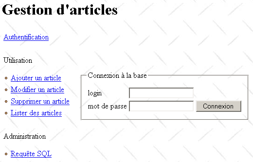
Dit is een minimale pagina zonder grafische elementen. Het kan nog erger. Sommige browserversies herkennen wel stylesheets, maar interpreteren deze verkeerd. Dit kan leiden tot een vervormde en onbruikbare pagina. Daarom rijst de vraag welk type browser de gebruiker gebruikt. Er bestaan technieken om het type browser te bepalen, maar deze zijn niet volledig betrouwbaar. Men kan dan verschillende stylesheets schrijven voor verschillende browsers of zelfs een versie zonder stylesheet schrijven voor browsers die deze negeren. Dit maakt de ontwikkeling natuurlijk omslachtiger. Dit belangrijke probleem is hier buiten beschouwing gelaten.
Met stylesheets kunnen we gebruikers van onze applicatie een gepersonaliseerde omgeving bieden. We zouden hen een pagina kunnen tonen met verschillende mogelijke weergavestijlen. Zij zouden dan de stijl kunnen kiezen die het beste bij hen past. Deze keuze zou in een database kunnen worden opgeslagen. Wanneer de gebruiker zich opnieuw aanmeldt, zouden we de applicatie dan kunnen starten met de stylesheet die zijn voorkeur heeft gekregen.
7.5.5. De invoermodule van de applicatie
Klanten zullen van de applicatie alleen de invoermodule kennen: apparticles.php. De werking ervan kan in grote lijnen als volgt worden beschreven:
- Het verzoek van de klant wordt opgehaald en geanalyseerd. Dit verzoek is al dan niet geconfigureerd. Als het verzoek parameters bevat, zijn de verwachte parameters als volgt: action=[action]&phase=[phase]&PHPSESSID=[PHPSESSID]
- Als het verzoek geen parameters bevat of als de opgehaalde parameters niet overeenkomen met de verwachte, stuurt de server als antwoord de authenticatiepagina (gebruikersnaam, wachtwoord). Zodra de gebruiker zich correct heeft aangemeld, wordt er een sessie aangemaakt. Deze dient om informatie op te slaan tijdens de communicatie tussen client en server.
- Als een verzoek correct wordt herkend, wordt het verwerkt door een module die afhankelijk is van zowel de actie als de huidige fase.
- Alle toegang tot de database verloopt via de businessklasse articles.php.
- De verwerking van een verzoek eindigt altijd met het verzenden van de pagina main.php naar de klant, waarin in $main['contenu'] deURL van de pagina die in zone 4 van de standaardpagina moet worden geplaatst, is gespecificeerd.
De basisstructuur van het script apparticles.php zou als volgt kunnen zijn:
<?php
// beheer van een artikeltabel
include "config.php";
include "articles.php";
// te ondernemen actie
$sAction=$_POST["action"] ? $_POST["action"] : $_GET["action"] ? $_GET["action"] : "authentifier";
$sAction=strtolower($sAction);
// eventuele fase
$sPhase=$_POST["phase"] ? $_POST["phase"] : $_GET["phase"] ? $_GET["phase"] : "0";
// sessie
session_start();
$dSession=$_SESSION["session"];
// is er een sessie actief?
if(! isset($dSession)){
// gebruikersauthenticatie
if($sAction=="authentifier" && $sPhase=="0") authentifier_0($dConfig);
if($sAction=="authentifier" && $sPhase=="1") authentifier_1($dConfig);
if($sAction=="authentifier" && $sPhase=="2") authentifier_2($dConfig);
// ongeldig verzoek
authentifier_0($dConfig);
}//if - geen sessie
// de sessie wordt opgehaald
$dSession=unserialize($dSession);
// verwerking van het verzoek
// ----- authenticatie
if($sAction=="authentifier" && $sPhase=="0") authentifier_0($dConfig);
if($sAction=="authentifier" && $sPhase=="1") authentifier_1($dConfig);
if($sAction=="authentifier" && $sPhase=="2") authentifier_2($dConfig);
// ----- artikel toevoegen
if($sAction=="addarticle" && $sPhase=="0") addArticle_0($dConfig,$dSession);
if($sAction=="addarticle" && $sPhase=="1") addArticle_1($dConfig,$dSession);
if($sAction=="addarticle" && $sPhase=="2") addArticle_2($dConfig,$dSession);
// ----- artikel bijwerken
if($sAction=="updatearticle" && $sPhase=="0") updateArticle_0($dConfig,$dSession);
if($sAction=="updatearticle" && $sPhase=="1") updateArticle_1($dConfig,$dSession);
if($sAction=="updatearticle" && $sPhase=="2") updateArticle_2($dConfig,$dSession);
if($sAction=="updatearticle" && $sPhase=="3") updateArticle_3($dConfig,$dSession);
// ----- artikel verwijderen
if($sAction=="deletearticle" && $sPhase=="0") deleteArticle_0($dConfig,$dSession);
if($sAction=="deletearticle" && $sPhase=="1") deleteArticle_1($dConfig,$dSession);
if($sAction=="deletearticle" && $sPhase=="2") deleteArticle_2($dConfig,$dSession);
// ----- artikelen raadplegen
if($sAction=="selectarticle" && $sPhase=="0") selectArticle_0($dConfig,$dSession);
if($sAction=="selectarticle" && $sPhase=="1") selectArticle_1($dConfig,$dSession);
if($sAction=="selectarticle" && $sPhase=="2") selectArticle_2($dConfig,$dSession);
// ----- een verzoek verzenden SQL
if($sAction=="sql" && $sPhase=="0") sql_0($dConfig,$dSession);
if($sAction=="sql" && $sPhase=="1") sql_1($dConfig,$dSession);
if($sAction=="sql" && $sPhase=="2") sql_2($dConfig,$dSession);
// onjuiste actie – de authenticatiepagina wordt weergegeven
session_destroy();
authentifier_0($dConfig,"0");
...
?>
Let op de volgende punten:
- functies die een specifiek verzoek van de klant verwerken, eindigen met het genereren van de antwoordpagina en met een exit-instructie die de uitvoering van het script apparticles.php beëindigt. Met andere woorden, men "keert" niet terug uit deze functies.
- De functies accepteren één of twee parameters:
- $dConfig is een woordenboek met informatie uit het configuratiebestand config.php. Alle functies maken hier gebruik van.
- $dSession is een woordenboek dat sessie-informatie bevat. Het bestaat alleen wanneer de sessie is aangemaakt, dat wil zeggen nadat de gebruiker met succes is geauthenticeerd. Daarom hebben de authenticatiefuncties deze parameter niet.
7.5.6. De foutpagina
Elke softwareapplicatie moet fouten die zich kunnen voordoen correct kunnen afhandelen. Een webapplicatie vormt hierop geen uitzondering. In het geval van een fout plaatsen we hier de volgende pagina erreurs.php in zone 4 van de standaardpagina:
Les erreurs suivantes se sont produites :
<ul>
<?php
for($i=0;$i<count($main["erreurs"]);$i++){
echo "<li>".$main["erreurs"][$i]."</li>\n";
}//voor
?>
</ul>
<a href="<?php echo $main["href"] ?>"><?php echo $main["lien"] ?></a>
Deze pagina toont de lijst met fouten die is gedefinieerd in $main['erreurs']. Daarnaast kan er een teruglink worden aangeboden, meestal naar de pagina die aan de foutpagina voorafging. Deze link wordt gedefinieerd door een tekst in $main['lien'] en een URL $main['href']. Om deze link te vermijden, volstaat het om de lege tekenreeks in te voeren in $main['lien']. Hier volgt een voorbeeld van een foutpagina in het geval dat de gebruiker zich onjuist aanmeldt:

7.5.7. De informatiepagina
Soms wil men de gebruiker alleen wat informatie geven, bijvoorbeeld dat de aanmelding is gelukt. Hiervoor gebruiken we de volgende pagina: infos.php:
Om informatie weer te geven als reactie op een verzoek van een klant,
- de informatie in $main['infos']
- URL van infos.php in $main['contenu']
Hier is bijvoorbeeld de informatie die wordt teruggestuurd wanneer de gebruiker zich correct heeft aangemeld:

7.6. De werking van de applicatie
We hebben nu een goed beeld van de algemene structuur van de te schrijven applicatie. Nu moeten we nog de navigatiepaden van de gebruiker binnen de applicatie, de acties die hij kan uitvoeren en de reacties die hij van de server ontvangt, toelichten. Zodra dit is gebeurd, kunnen we de functies schrijven die de verschillende verzoeken van een klant verwerken. Hieronder zullen we de werking van de applicatie toelichten aan de hand van de pagina’s die aan de gebruiker worden getoond als reactie op bepaalde acties. We zullen telkens de volgende punten vermelden:
de eerste actie van de gebruiker die tot het weergegeven antwoord heeft geleid | |
de parameters die door de browser van de klant naar de server zijn verzonden als reactie op de handmatige actie van de gebruiker | |
het script dat zone 4 van de standaardpagina genereert |
7.6.1. Authenticatie
Voordat de gebruiker de applicatie kan gebruiken, moet hij zich aanmelden via de volgende pagina:

1 - eerste verzoek van de URL apparticles.php 2 - gebruik van de optie ‘Authenticatie’ in het menu 3 - directe aanvraag van de URL articles.php met onjuiste parameters | |
1 - geen parameters 2 - action=authenticate?phase=0 3 - een lijst met onjuiste parameters | |
login.php |
Op de startpagina heeft de link [Ajouter un article] de volgende vorm: action=addarticle?phase=0. De andere links hebben dezelfde vorm met action=(authentifier, updatearticle, deletearticle, selectarticle, sql). De gebruiker vult het formulier in en klikt op de knop [Connexion]:

Het antwoord is als volgt:

knop [Connexion] | |
action=authenticeren?phase=1 | |
infos.php |
De titel van de pagina is aangepast om de gebruikersnaam en de beheerders-/gebruikersrechten weer te geven. Daarnaast zijn alle links in zone 2 aangepast om aan te geven dat er een sessie is gestart. De parameter PHPSESSID=[PHPSESSID] is hieraan toegevoegd.
Als de server de client niet heeft kunnen identificeren, krijgt deze een ander antwoord:

knop [Connexion] | |
actie=authenticeren?fase=1 | |
erreurs.php |
De link [Retour à la page de login] is een link naar de pagina URL apparticles.php?action=authentifier&phase=2&txtLogin=x. Deze link brengt de klant terug naar de inlogpagina, waar het inlogveld wordt ingevuld met de waarde van de parameter txtLogin:

link [Retour à la page de login] | |
action=authenticeren?phase=2&txtLogin=x | |
login.php |
7.6.2. Een artikel toevoegen
De menulink [Ajouter un article] leidt naar de volgende pagina in zone 4 van de standaardpagina:

link [Ajouter un article] | |
action=addArticle?phase=0&PHPSESSID=[PHPSESSID] | |
addarticle.php |
De gebruiker vult de velden in en verstuurt alles naar de server via de knop [Ajouter], die van het type submit is. Er vindt geen controle plaats aan de kant van de gebruiker. Dit gebeurt door de server. De server kan als reactie een foutpagina terugsturen, zoals in het onderstaande voorbeeld:
Verzoek | Antwoord |
 |  |
knop [Ajouter] | |
action=addArticle?phase=1&PHPSESSID=[PHPSESSID] | |
erreurs.php |
Via de link [Retour à la page d'ajout d'article] kunt u terugkeren naar de invoerpagina:
Aanvraag | Antwoord |
| |
link [Retour à la page d'ajout d'article] | |
action=addArticle?phase=2&PHPSESSID=[PHPSESSID] | |
article.php |
Als het toevoegen zonder fouten verloopt, ontvangt de gebruiker een bevestigingsbericht:
Verzoek | Antwoord |
 |  |
knop [Ajouter] | |
action=addArticle?phase=1&PHPSESSID=[PHPSESSID] | |
infos.php |
7.6.3. Artikelen bekijken
De menulink [Lister des articles] leidt naar de volgende pagina in zone 4 van de standaardpagina:

menulink [Lister des articles] | |
action=selectArticle?phase=0&PHPSESSID=[PHPSESSID] | |
select1.php |
Er wordt een SELECT-query [colonnes] from articles where [where] orderby [orderby] uitgevoerd op de artikeltabel, waarbij [colonnes], [where] en [orderby] de inhoud van de bovenstaande velden zijn. Bijvoorbeeld:
Aanvraag |
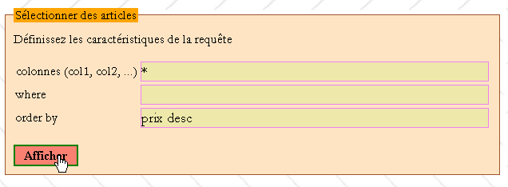 |
Antwoord |
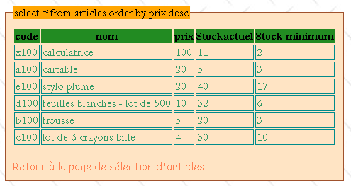 |
knop [Afficher] | |
action=selectArticle?phase=1&PHPSESSID=[PHPSESSID] | |
select2.php |
Het verzoek kan onjuist zijn, in welk geval de klant een foutpagina te zien krijgt:
Verzoek |
 |
Antwoord |
 |
In beide gevallen (met of zonder fouten) kunt u via de link [Retour à la page de sélection d'articles] terugkeren naar de pagina select1.php:
Verzoek |
 |
Antwoord |
 |
link [Retour à la page de sélection d'articles] | |
action=selectArticle?phase=2&PHPSESSID=[PHPSESSID] | |
select1.php |
7.6.4. Artikelen wijzigen
De menulink [Modifier un article] brengt de volgende pagina naar zone 4 van de standaardpagina:

menulink [Modifier un article] | |
action=updateArticle?phase=0&PHPSESSID=[PHPSESSID] | |
updatearticle1.php |
Kies de code van het te wijzigen artikel in de vervolgkeuzelijst en voer [OK] in om het artikel met deze code te wijzigen:
Vraag | Antwoord |
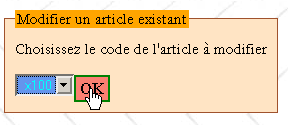 | 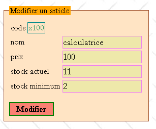 |
knop [OK] | |
action=updateArticle?phase=1&PHPSESSID=[PHPSESSID] | |
updatearticle2.php |
Zodra de pagina van het te wijzigen artikel is geopend, kan de gebruiker zijn wijzigingen aanbrengen:
Verzoek | Antwoord |
 |  |
knop [Modifier] | |
action=updateArticle?phase=2&PHPSESSID=[PHPSESSID] | |
infos.php |
De gebruiker kan fouten maken tijdens het bewerken:
Verzoek | Antwoord |
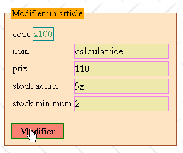 | 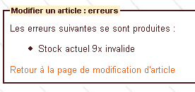 |
Via de link [Retour à la page de modification d'article] kunt u terugkeren naar de invoerpagina:
link [Retour à la page de modification d'article] | |
action=updateArticle?phase=3&PHPSESSID=[PHPSESSID] | |
updatearticle2.php |
7.6.5. Een artikel verwijderen
De menulink [Supprimer un article] leidt naar de volgende pagina in zone 4 van de standaardpagina:

menulink [Supprimer un article] | |
action=deleteArticle?phase=0&PHPSESSID=[PHPSESSID] | |
deletearticle1.php |
De gebruiker kiest de code van het te verwijderen artikel uit een vervolgkeuzelijst:
Verzoek | Antwoord |
 |  |
knop [OK] | |
action=deleteArticle?phase=1&PHPSESSID=[PHPSESSID] | |
deletearticle2.php |
De gebruiker bevestigt het verwijderen van het artikel met de knop [Supprimer]:
Verzoek | Antwoord |
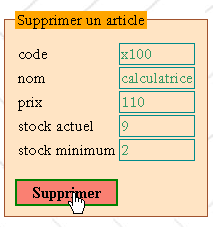 |  |
knop [Supprimer] | |
action=deleteArticle?phase=2&PHPSESSID=[PHPSESSID] | |
infos.php |
7.6.6. Verzoeken van de beheerder
De menulink [Requête SQL] leidt naar de volgende pagina in zone 4 van de standaardpagina:

menulink [Requête SQL] | |
action=sql?phase=0&PHPSESSID=[PHPSESSID] | |
sql1.php |
Typ de tekst van de query SQL in het invoerveld en gebruik de knop [Exécuter] om deze uit te voeren. Alleen een beheerder kan deze queries uitvoeren, zoals in het volgende voorbeeld te zien is:
Verzoek | Antwoord |
 |  |
knop [Exécuter] | |
action=sql?phase=1&PHPSESSID=[PHPSESSID] | |
erreurs.php |
Via de link [Retour à la page d'émission de requêtes SQL] kunt u terugkeren naar de invoerpagina:
link [Retour à la page d'émission de requêtes SQL] | |
action=sql?phase=2&PHPSESSID=[PHPSESSID] | |
sql1.php |
Als je beheerder bent en de query syntactisch correct is:
Verzoek |
 |
krijgt men het resultaat van de aanvraag:
Antwoord |
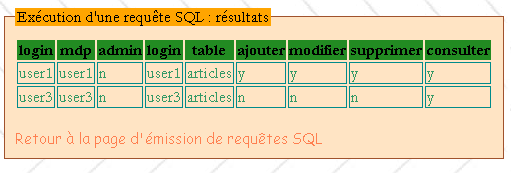 |
knop [Exécuter] | |
action=sql?phase=1&PHPSESSID=[PHPSESSID] | |
sql2.php |
Er kunnen verzoeken worden ingediend om tabellen bij te werken:
Verzoek |
 |
Antwoord |
 |
knop [Exécuter] | |
action=sql?phase=1&PHPSESSID=[PHPSESSID] | |
infos.php |
7.6.7. Te verrichten werkzaamheden
Schrijf de scripts en functies die nodig zijn voor de applicatie:
gebruikersnaam | type | rol |
script | het startpunt voor de verwerking van klantverzoeken | |
functie | verwerkt het verzoek met de parameters action=authenticate&phase=0 | |
functie | verwerkt het verzoek met de parameters action=authenticeren&fase=1 | |
functie | verwerkt het verzoek met de parameters action=authenticeren&fase=2 | |
functie | verwerkt het verzoek met de parameters action=addArticle&phase=0 | |
functie | verwerkt de verzoek met de parameters action=addArticle&phase=1 | |
functie | verwerkt de verzoek met de parameters action=addArticle&phase=2 | |
functie | verwerkt de verzoek met de parameters action=updatearticle&phase=0 | |
functie | verwerkt de verzoek met de parameters action=updatearticle&phase=1 | |
functie | verwerkt het verzoek met de parameters action=updatearticle&phase=2 | |
functie | verwerkt het verzoek met de parameters action=updatearticle&phase=3 | |
functie | verwerkt het verzoek met de parameters action=deletearticle&phase=0 | |
functie | verwerkt het verzoek met de parameters action=deletearticle&phase=1 | |
functie | verwerkt het verzoek met de parameters action=deletearticle&phase=2 | |
functie | verwerkt het verzoek met de parameters action=selectarticle&phase=0 | |
functie | verwerkt de verzoek met de parameters action=selectarticle&phase=1 | |
functie | verwerkt de verzoek met de parameters action=selectarticle&phase=2 | |
functie | verwerkt de verzoek met de parameters action=sql&phase=0 | |
functie | verwerkt de verzoek met de parameters action=sql&phase=1 | |
functie | verwerkt de verzoek met de parameters action=sql&phase=2 | |
script | genereert de standaardpagina | |
script | genereert de inlogpagina | |
script | genereert de foutpagina | |
script | genereert de informatiepagina | |
script | genereert de pagina voor het toevoegen van een artikel | |
script | genereert pagina 1 voor het bewerken van een artikel | |
script | genereert pagina 2 van de wijziging van een artikel | |
script | genereert pagina 1 van het verwijderen van een artikel | |
script | genereert pagina 2 van het verwijderen van een artikel | |
script | genereert pagina 1 van de artikelselectie | |
script | genereert pagina 2 van de artikelselectie | |
script | genereert pagina 1 van de verzoekuitzending | |
script | genereert pagina 2 van de verzoekuitzending |
7.7. De applicatie verder ontwikkelen
We hebben nu een applicatie die doet wat hij moet doen en die redelijk gebruiksvriendelijk is. We gaan de applicatie op verschillende punten verder ontwikkelen:
- de SGBD
- de beveiliging
- het uiterlijk
- de prestaties
7.7.1. Het type database wijzigen
In ons onderzoek gingen we ervan uit dat de gebruikte SGBD de MySQL was. Wijzig dit in SGBD en laat zien dat de enige aanpassing die moet worden gedaan, de definitie van de variabele $dDSN in het configuratiebestand config.php betreft.
7.7.2. De beveiliging verbeteren
Bij het ontwikkelen van een webapplicatie mag men er nooit van uitgaan dat de client een browser is en dat het verzoek dat deze naar ons stuurt, wordt gecontroleerd door het formulier dat we hem vóór dit verzoek hebben gestuurd. Elk programma kan client zijn van een webapplicatie en dus elk verzoek, al dan niet met parameters, naar de applicatie sturen. De applicatie moet daarom alles controleren.
Als we de code van het script apparticles.php bekijken, zien we
- dat er zonder sessie geen andere actie dan authenticatie kan plaatsvinden. Deze sessie bestaat alleen als de gebruiker zich met succes heeft geauthenticeerd. Ter herinnering: een sessie wordt geïdentificeerd door een vrij lange tekenreeks, het zogenaamde sessietoken, dat de volgende vorm heeft: 176a43609572907333118333edf6d1fb. Dit token kan op verschillende manieren naar de applicatie worden verzonden, bijvoorbeeld door gebruik te maken van een geconfigureerde URL:
apparticles.php?PHPSESSID=176a43609572907333118333edf6d1fb.
Een programma dat herhaaldelijk de vorige URL zou opvragen door het token willekeurig te variëren in de hoop het juiste token te vinden, zou er waarschijnlijk vele dagen over doen om de juiste combinatie te genereren, aangezien het aantal mogelijke combinaties zo groot is. Tegen die tijd zal de sessie, die van beperkte duur is, hoogstwaarschijnlijk al beëindigd zijn. Een ander risico is dat het token, dat onversleuteld over het netwerk wordt verzonden, wordt onderschept. Dit risico is reëel. Men kan dan gebruikmaken van een versleutelde verbinding tussen de server en de client.
- Zodat, zodra de sessie is gestart, alleen bepaalde acties zijn toegestaan. Een URL met de instellingen action=tricher&phase=0&PHPSESSID=[PHPSESSID] zou worden afgewezen, omdat de actie 'tricher' geen toegestane actie is. Wanneer de parameters (actie, fase) niet worden herkend, geeft onze applicatie de authenticatiepagina weer.
De applicatie controleert echter niet of de toegestane acties in de juiste volgorde plaatsvinden. Bijvoorbeeld de volgende twee acties:
- action=addArticle&phase=0&PHPSESSID=[PHPSESSID]
- action=updateArticle&phase=1&PHPSESSID=[PHPSESSID]
zijn twee toegestane acties. Actie 2 mag echter niet volgen op actie 1.
Hoe kan de volgorde van de door de clientbrowser aangevraagde URL worden bijgehouden?
Hiervoor kunnen twee variabelen worden gebruikt: $_SERVER['REQUEST_URI] en $_SERVER['HTTP_REFERER], twee gegevens die door de clientbrowsers in hun headers HTTP worden verzonden.
$_SERVER['REQUEST_URI]: Dit is de door de client aangevraagde URI. Bijvoorbeeld
$_SERVER['HTTP_REFERER]: Dit is de URL die in de browser werd weergegeven vóór de nieuwe URL die de browser nu aanvraagt (de vorige URI). Als de browser die de eerder genoemde URI heeft weergegeven bijvoorbeeld een nieuw verzoek naar een server stuurt, zal de variabele $_SERVER['HTTP_REFERER'] van die server de waarde
Om te controleren of twee acties van onze applicatie in de juiste volgorde plaatsvinden, kunnen we als volgt te werk gaan:
Tijdens actie 1:
- noteren we de aangevraagde URI (URI1) en voeren we deze in de sessie in
Bij actie 2:
- halen we de HTTP-REFERER uit actie 2 op. Hieruit wordt de URI (URI2) afgeleid uit de URL die eerder werd weergegeven in de browser die het verzoek indient.
- we halen de URI en URI1 op die in de sessie waren opgeslagen en die de URI vormen van de actie die eerder bij de server werd aangevraagd
- Als actie 2 volgt op actie 1, dan moet gelden: URI2 = URI1. Als dit niet het geval is, wordt de gevraagde actie geweigerd en wordt de authenticatiepagina weergegeven.
- We noteren in de sessie de URI en URI2 van de huidige actie ter verificatie van de volgende actie. En zo verder.
Hier volgt een voorbeeld. Na authenticatie kiest men de link [Ajouter un article]:
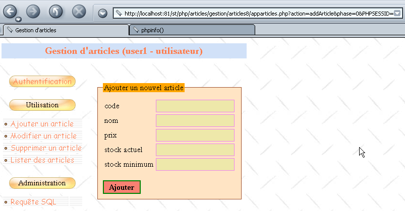
De URL van deze pagina is:
http://localhost:81/st/php/articles/gestion/articles8/apparticles.php?action=addArticle&phase=0&PHPSESSID=006a63e6027f16c70b63cdae93405eeb
Direct in het veld [Adresse] van de browser wijzigen we de URL als volgt:
http://localhost:81/st/php/articles/gestion/articles8/apparticles.php?action=deleteArticle&fase=1&PHPSESSID=006a63e6027f16c70b63cdae93405eeb
We krijgen dan de authenticatiepagina te zien:

Dit verdient enige uitleg. Wanneer we een URL opvragen door de identiteit rechtstreeks in het adresveld van de browser in te voeren, verstuurt de browser de header HTTP_REFERER niet. Onze applicatie vindt daar dus niet de URI van de vorige actie, URI, die ze in de sessie had opgeslagen. Ze stuurt dan de authenticatiepagina als antwoord terug.
Dit mechanisme werkt goed voor browsers, maar helemaal niet voor een geprogrammeerde client. Deze kan namelijk elke gewenste HTTP_REFERER-header versturen. Hij kan dus „vals spelen“ door te beweren dat hij een bepaalde stap wel heeft doorlopen, terwijl dat niet het geval is. Er moet dus voor worden gezorgd dat de volgorde van de stappen wordt gerespecteerd. Als de gevraagde actie dus action=addArticle&phase=1 (invoer) is, dan moet de voorgaande actie noodzakelijkerwijs action=deleteArticle&phase=0 (eerste aanvraag van de invoerpagina) of action=addArticle&phase=2 (terugkeer naar invoer na foutieve toevoeging) zijn. Evenzo geldt dat als de gevraagde actie action=addArticle&phase=2 (toevoegen) is, de voorgaande actie action=addArticle&phase=1 (invoer) moet zijn. Men kan de gebruiker dwingen deze volgorde aan te houden.
Terwijl het eerste mechanisme algemeen is en op elke applicatie kan worden toegepast, vereist het tweede mechanisme specifieke codering per applicatie en is het omslachtiger: alle mogelijke acties van de gebruiker en de bijbehorende volgordes moeten worden doorgenomen. Deze volgordes kunnen in een woordenboek worden opgeslagen, zoals in de volgende code wordt getoond:
// authenticatie
$dPrec['authentifier']['0']=array();
$dPrec['authentifier']['1']=array(
array('action'=>'authentifier','phase'=>'0'),
array('action'=>'authentifier','phase'=>'2')
);
$dPrec['authentifier']['2']=array(
array('action'=>'authentifier','phase'=>'1'),
);
// artikel toevoegen
$dPrec['addarticle']['0']=array();
$dPrec['addarticle']['1']=array(
array('action'=>'addarticle','phase'=>'0'),
array('action'=>'addarticle','phase'=>'2')
);
$dPrec['addarticle']['2']=array(
array('action'=>'addarticle','phase'=>'1'),
);
// artikel wijzigen
$dPrec['updatearticle']['0']=array();
$dPrec['updatearticle']['1']=array(
array('action'=>'updatearticle','phase'=>'0'),
);
$dPrec['updatearticle']['2']=array(
array('action'=>'updatearticle','phase'=>'1'),
array('action'=>'updatearticle','phase'=>'3')
);
$dPrec['updatearticle']['3']=array(
array('action'=>'updatearticle','phase'=>'2'),
);
// artikel verwijderen
$dPrec['deletearticle']['0']=array();
$dPrec['deletearticle']['1']=array(
array('action'=>'deletearticle','phase'=>'0'),
);
$dPrec['deletearticle']['2']=array(
array('action'=>'deletearticle','phase'=>'1'),
);
// artikelen selecteren
$dPrec['selectarticle']['0']=array();
$dPrec['selectarticle']['1']=array(
array('action'=>'selectarticle','phase'=>'0'),
array('action'=>'selectarticle','phase'=>'2')
);
$dPrec['selectarticle']['2']=array(
array('action'=>'selectarticle','phase'=>'1'),
);
// beheerdersverzoek
$dPrec['sql']['0']=array();
$dPrec['sql']['1']=array(
array('action'=>'sql','phase'=>'0'),
array('action'=>'sql','phase'=>'2')
);
$dPrec['sql']['2']=array(
array('action'=>'sql','phase'=>'1'),
);
$dPrec['action']['phase'] is een tabel die de acties bevat die aan de actie en de fase kunnen voorafgaan en die als index voor het woordenboek dienen. Deze voorafgaande acties worden ook weergegeven door een woordenboek met twee sleutels: 'actie' en 'fase'. Als een actie door elke willekeurige actie kan worden voorafgegaan, dan is $dPrec['action']['phase'] een lege tabel. Als een actie niet in het woordenboek voorkomt, betekent dit dat deze niet is toegestaan. Laten we de bovenstaande actie „authenticeren” eens bekijken:
// authenticatie
$dPrec['authentifier']['0']=array();
$dPrec['authentifier']['1']=array(
array('action'=>'authentifier','phase'=>'0'),
array('action'=>'authentifier','phase'=>'2')
);
$dPrec['authentifier']['2']=array(
array('action'=>'authentifier','phase'=>'1'),
);
De bovenstaande code betekent dat de actie action=authentifier&phase=0 kan worden voorafgegaan door elke willekeurige actie, dat action=authentifier&phase=1 kan worden voorafgegaan door action=authentifier&phase=0 of door action=authentifier&phase=2 en dat action=authentifier&phase=2 kan worden voorafgegaan door de actie action=authentifier&phase=1.
Schrijf de volgende functie:
// ---------------------------------------------------------------
function enchainementOK(&$dConfig, &$dSession, $sAction, $sPhase){
// controleert of de huidige actie ($sAction, $sPhase) kan volgen op de vorige actie
// opgeslagen in $dSession['précédent']
// het woordenboek met toegestane ketens bevindt zich in $dConfig['précédents']
// levert TRUE op als de keten mogelijk is, anders FALSE
....
Met deze functie kan de hoofdapplicatie controleren of de reeks acties correct is:
<?php
// beheer van een artikeltabel
include "config.php";
include "articles.php";
// sessie
session_start();
$dSession=$_SESSION["session"];
// te ondernemen actie
$sAction=$_POST["action"] ? $_POST["action"] : $_GET["action"] ? $_GET["action"] : "authentifier";
$sAction=strtolower($sAction);
// eventuele fase van de actie
$sPhase=$_POST["phase"] ? $_POST["phase"] : $_GET["phase"] ? $_GET["phase"] : "0";
// is er een lopende sessie?
if(! isset($dSession)){
// authenticatie van de gebruiker
if($sAction=="authentifier" && $sPhase=="0") authentifier_0($dConfig);
if($sAction=="authentifier" && $sPhase=="1") authentifier_1($dConfig);
if($sAction=="authentifier" && $sPhase=="2") authentifier_2($dConfig);
// afwijkende actie
authentifier_0($dConfig);
}//if - geen sessie
// de sessie wordt opgehaald
$dSession=unserialize($dSession);
// is de volgorde van de acties normaal?
if( ! enchainementOK($dConfig,$dSession,$sAction,$sPhase)){
// abnormale volgorde
authentifier_0($dConfig);
}//if
// verwerking van acties
if($sAction=="authentifier"){
if($sPhase=="0") authentifier_0($dConfig);
if($sPhase=="1") authentifier_1($dConfig);
if($sPhase=="2") authentifier_2($dConfig);
}//if
if($sAction=="addarticle"){
...
7.7.3. De 'look' aanpassen
Laten we niet vergeten dat een van de voorwaarden bij het ontwerp van deze applicatie was dat deze uitbreidbaar moest zijn. Stel dat we na een paar weken merken dat de gebruiksvriendelijkheid van de applicatie verbeterd moet worden. Pas de applicatie zodanig aan dat de structuur en de weergave van de standaardpagina worden gewijzigd. De wijzigingen vinden op twee plaatsen plaats:
- in het script main.php, dat de structuur van de standaardpagina definieert. Pas deze aan.
- in het stylesheet dat de "look" van de applicatie bepaalt. Pas dit aan.
7.7.4. De prestaties verbeteren
Voorlopig hebben we gekozen voor een ‘light client’-browser: deze doet niets anders dan de weergave verzorgen. We kunnen deze browser verwerkings taken laten uitvoeren door scripts op te nemen in de webpagina’s die we ernaar sturen. Deze scripts kunnen in verschillende talen zijn geschreven, met name VBScript en JavaScript. Internet Explorer en Netscape domineren de browsermarkt in een verhouding van ongeveer 60/40. Bovendien is IE alleen beschikbaar in de Windows-omgeving en niet bijvoorbeeld op Unix, waar Netscape de overhand heeft. Netscape voert VBScript-scripts niet standaard uit, terwijl beide browsers JavaScript-scripts wel uitvoeren. Aangezien Netscape nog steeds een aanzienlijk aandeel van de browsermarkt inneemt, moeten VBScript-scripts worden vermeden. Daarom wordt JavaScript doorgaans gebruikt in client-side scripts.
Verwerkingen waarbij de server niet hoeft in te grijpen, worden gedelegeerd aan scripts aan de clientzijde. In onze applicatie zou het wenselijk zijn dat de clientbrowser pas een verzoek naar de server verstuurt nadat deze is gecontroleerd. Het heeft dus geen zin om een authenticatieverzoek naar de server te sturen als de gebruiker het veld [login] in het authenticatieformulier leeg heeft gelaten. Het is beter om de gebruiker te waarschuwen dat zijn verzoek onjuist is:

Merk op dat dit de server er niet van weerhoudt om te controleren of het login-veld niet leeg is, aangezien de client niet noodzakelijkerwijs een browser is en de voorgaande controle dus mogelijk niet is uitgevoerd. Ervan uitgaan dat de client een browser is, vormt een groot risico voor de beveiliging van de applicatie.
Bekijk de verschillende momenten waarop de browser informatie naar de server verstuurt en wanneer deze informatie kan worden gecontroleerd, en schrijf een of meer JavaScript-functies waarmee de browser de geldigheid van de informatie kan controleren voordat deze naar de server wordt verzonden.
Om het vorige voorbeeld te herhalen: het script login.php dat de authenticatiepagina genereert, ziet er dan als volgt uit:
<script language="javascript">
function check(){
// er wordt gecontroleerd of er daadwerkelijk is ingelogd
with(document.frmLogin){
champs=/^\s*$/.exec(txtLogin.value);
if(champs!=null){
// geen login
alert("Vous n'avez pas indiqué de login");
txtLogin.focus();
return;
}//if
// de gegevens zijn aanwezig – we sturen ze naar de server
submit();
}//met
}//controle
</script>
<form name="frmLogin" method="post" action="<?php echo $main["post"] ?>">
<table>
<tr>
<td>login</td>
<td><input type="text" value="<?php echo $main["login"] ?>" name="txtLogin" class="text"></td>
</tr>
<tr>
<td>mot de passe</td>
<td><input type="password" value="" name="txtMdp" class="text"></td>
<td><input type="button" onclick="check()" value="Connexion" class="submit"></td>
</tr>
</table>
</form>
7.8. Meer informatie
Tot slot geven we nog enkele suggesties om deze casestudy verder uit te diepen:
- het zou interessant zijn om te onderzoeken of de standaardpagina van deze applicatie niet als klasse zou kunnen worden gedefinieerd. Deze zou dan in andere applicaties kunnen worden gebruikt.
- Onze applicatie is goed geschikt voor browsergebaseerde clients, maar minder voor ‘standalone’-clients. Deze moeten:
- een TCP-verbinding met de server tot stand brengen
- met de server „communiceren“ HTTP
- de antwoorden HTML analyseren om de gewenste informatie te vinden, aangezien de stand-alone client waarschijnlijk niet geïnteresseerd is in de presentatiecode HTML die bedoeld is voor browsers.
Het zou interessant zijn als onze applicatie XML zou genereren in plaats van HTML. De clients zouden dan zowel (toch redelijk recente) browsers als stand-alone applicaties kunnen zijn. Deze laatste zouden geen enkele moeite hebben om de gezochte informatie te vinden, aangezien het XML-antwoord van de server geen presentatie-informatie zou bevatten, maar alleen inhoud.
- Er moet zeker aandacht worden besteed aan gelijktijdige toegang tot de artikeldatabase. Er zijn minstens twee punten die moeten worden opgehelderd:
- verwerkt de door de applicatie gebruikte SGBD gelijktijdige toegang tot hetzelfde artikel correct? Wat gebeurt er bijvoorbeeld als twee gebruikers tegelijkertijd hetzelfde artikel wijzigen (ze drukken tegelijkertijd op de knop [Modifier])? Dat hangt waarschijnlijk af van het onderliggende SGBD.
- Momenteel ondersteunt onze applicatie geen gelijktijdige toegang. De database zou echter in een consistente toestand moeten blijven, ook al zijn er verrassingen te verwachten. Laten we de volgende reeks gebeurtenissen eens bekijken:
- de gebruiker U1 opent het bewerkingsscherm van een artikel
- de gebruiker U2 begint even later met het verwijderen van hetzelfde artikel
- Beide acties vereisen communicatie tussen client en server. Afhankelijk van de werkwijze van elke gebruiker kan gebruiker U2 zijn werk eerder afronden dan U1. Wanneer deze laatste zijn wijzigingen afrondt en deze via [Modifier] bevestigt, krijgt hij de informatiepagina als antwoord, waarbij SGBD aangeeft dat [0 ligne(s) ont été modifiées], omdat de pagina die hij wilde wijzigen inmiddels is verwijderd. De gebruiker zal hier ongetwijfeld door verrast zijn. Vanuit ergonomisch oogpunt zou het waarschijnlijk beter zijn om een pagina weer te geven die de fout duidelijker aangeeft. Bovendien zou men kunnen overwegen om de gebruiker exclusieve toegang tot een artikel te verlenen zodra hij begint met het bijwerken ervan. Een andere gebruiker die hetzelfde artikel wil bijwerken, zou te horen krijgen dat er al een andere bewerking gaande is. Dit levert een probleem op als de eerste gebruiker te lang wacht met het bevestigen van zijn bewerking: de anderen worden dan geblokkeerd. Hiervoor moeten oplossingen worden gevonden die grotendeels afhangen van de mogelijkheden van de gebruikte SGBD. Oracle beschikt bijvoorbeeld over meer mogelijkheden op dit gebied dan MySQL.